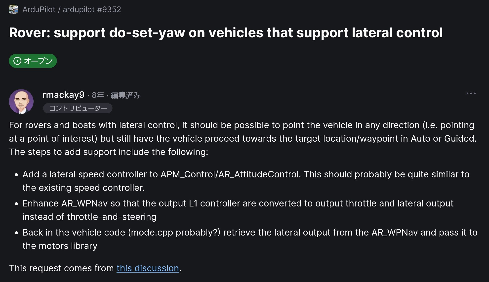

ArduPilot DevConf 2026 · Ottawa
Hideyuki Fujikawa · Drone Japan
Show = JSON timeline: position, LED, fountain on one timecode
GCS ⇄ (Wi-Fi / MAVLink) ⇄ Unit ⇄ FC

Rover-4.6.3 + 5 commits · 16 files · +661 / −69 · with AI support
Use: Auto = CONDITION_YAW · Guided = GUID_OPTIONS bit 7 · omni frames only
AR_PosControl::init reset the fixed headingGuided GoTo ×19 · QZSS CLAS (no base station)
WP_RADIUS = 2 mLikely cause — not verified yet
lateral_base = 0)Logs: fixed heading is set correctly, but no PIDL log and ATT.DesYaw = 0 → tracking can't be seen
WP_RADIUS · tuneCode: rover-4.6.3-lateral-move · github.com/hfujikawa77/ardupilot
Contact: hfujikawa77@gmail.com